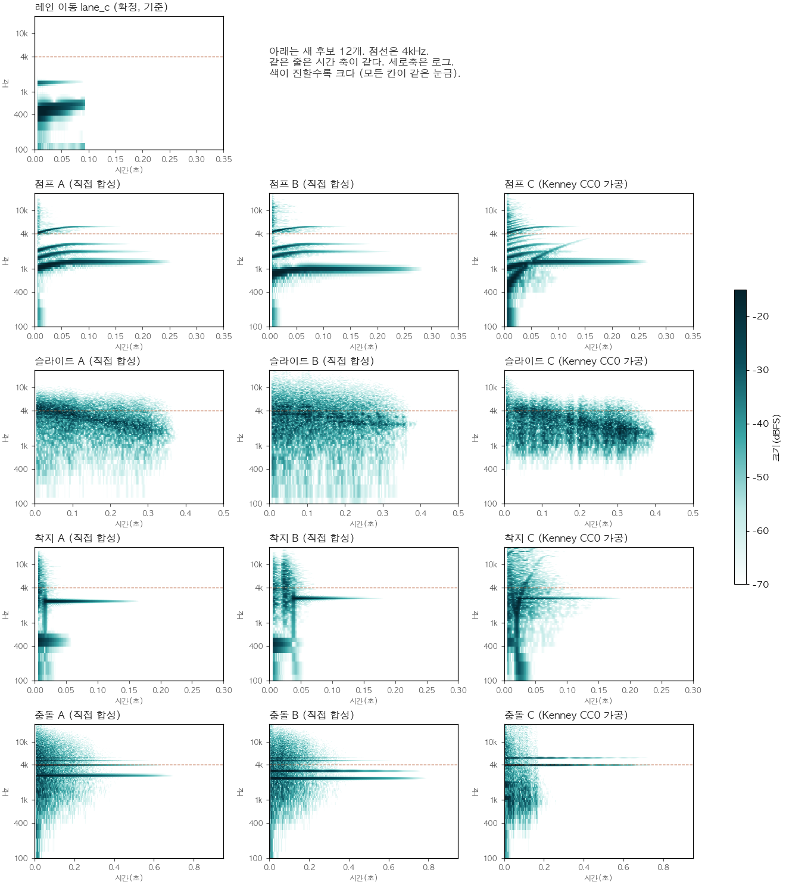

소리 후보 2차
점프·슬라이드·착지·충돌을 다시 만들었습니다. 게임에는 아직 들어가지 않았습니다. 종류마다 하나씩 골라 주세요.
확정된 소리
배경 음악: Jelly Pulse (bgm_3)마단조, 100BPM, 끊김 없는 반복
레인 이동: lane_c짧은 뽁 + 아주 작은 유리빛
효과음 고르기
A·B·C는 새 소리이고 C는 Kenney CC0 소리를 가공한 것입니다. 점선 "1차"는 비교용 예전 소리(종류별 A)입니다. 누르면 바로 들리고 그 소리가 선택됩니다.
같이 듣기
bgm_3 박자에 맞춰 lane_c와 위에서 고른 소리를 플레이하듯 틀어 줍니다.
측정
숫자 표는 report.md, 출처는 LICENSES.md에 있습니다.
